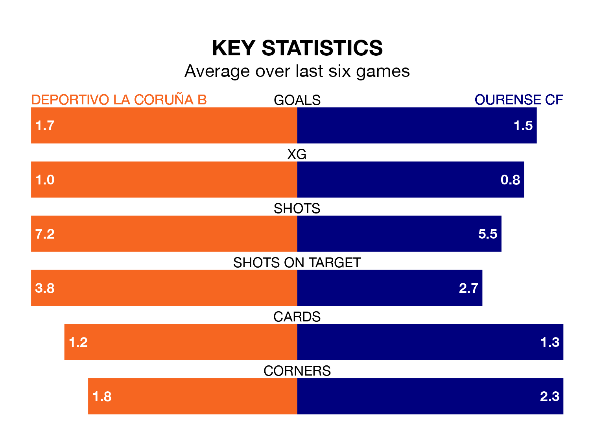

Sunday's early match between Deportivo La Coruña B and Ourense CF promises to be one for the neutrals, as two of the Segunda División RFEF Group 1's most free-scoring sides go head-to-head.
Ahead of the game at Ciudad Deportiva de Abegondo-Campo 2, Deportivo La Coruña B and Ourense sit joint-third in the goal-scoring charts, with 30 goals apiece.
Diego Gómez Pérez and Matias Castillo Abascal lead the way for the home side, having bagged five goals each in their 23 games to date.
And Amin Abaradan Bouzaig has been the main man in the opponents' penalty box for Ourense, with 12 goals.
Ourense are second in the table after 23 games, of which they have won 13 and drawn eight, earning 47 points.
Deportivo La Coruña B are 10 places behind the visitors in 12th, with six wins and nine draws putting them on 27 points.
In the last 10 years, Deportivo La Coruña B and Ourense have played each other on six occasions. Deportivo La Coruña B won one of them, Ourense four, and they drew once.
On average, Deportivo La Coruña B scored 0.3 goals and Ourense 0.7 in those matches.
Their last meeting was on October 14, when Ourense won 1-0 at home.
The home team are in mixed form in the Segunda División RFEF Group 1, with two wins and three draws from their last six games.
With three wins and three draws over that period, Ourense's form is better – they have taken 12 points from 18, compared to Deportivo La Coruña B's nine.
Deportivo La Coruña B's last match was on February 17, a 1-0 loss against SD Compostela.
Ourense drew 0-0 with Zamora CF last time out, on Sunday.
Updated: 10:08 (UTC), 23/02/24